UNIT 2: LIGHTING
2.1 Expressive quality of light. Photometry. Colour temperature
In order to be able to process visual information about the world, the existence of light is important, since, through its reflection on objects, it reaches the visual system and allows the brain to process information about bodies such as their shape, colour and texture. The six parameters for planning the lighting of a scene are the following:
1. The intensity of light: It is necessary for the image to be registered, so it must be taken into account, in turn:
The amount of light: depending on the type of lighting that is going to be given to a scene, i.e. a sunny day, a sunrise, etc., the lighting scheme must be planned in order to be reproduced correctly. For this situation to be carried out, it is necessary to adapt the degree of luminosity, so that the intensity and the reflection capacity of the different objects must be worked on.
The luminous intensity depends on the power or absolute amount of light emitted and the nature or design of the selected source, and on the distance between the source and the subject to be recorded, which is reflected in the so-called inverse square law.
Light intensity meters and measurement units: when working on a scene there are a number of parameters that have to be taken into account for correct illumination. Devices such as the exposure meter or the light meter are used for this purpose.
2. Shadows. In relation to this section it is important to highlight:
The type of shadows.
Projection of the shadows.
Shadow sharpness.
Size of the shadow.
3. Contrast. The existing contrast ratio and its balance. What is sought is the work and analysis of the relationship between the brightest and darkest areas of the scene, so that a series of parameters must be regulated to allow it to work.
4. Colour. It is one of the most important parameters of the scene composition. For this reason, the following colour attributes should be taken into account: hue (matiz), which is the feeling of the colour; saturation, which indicates the amount of white light a colour possesses; and brightness, which is the intensity of the illumination.
Colour is a subjective value and its meaning depends on the cultural values of
each society. Its attributes can denote a series of sensations, as shown in the
following image. Knowledge of colour brings aesthetic qualities to the lighting
design of a scene.
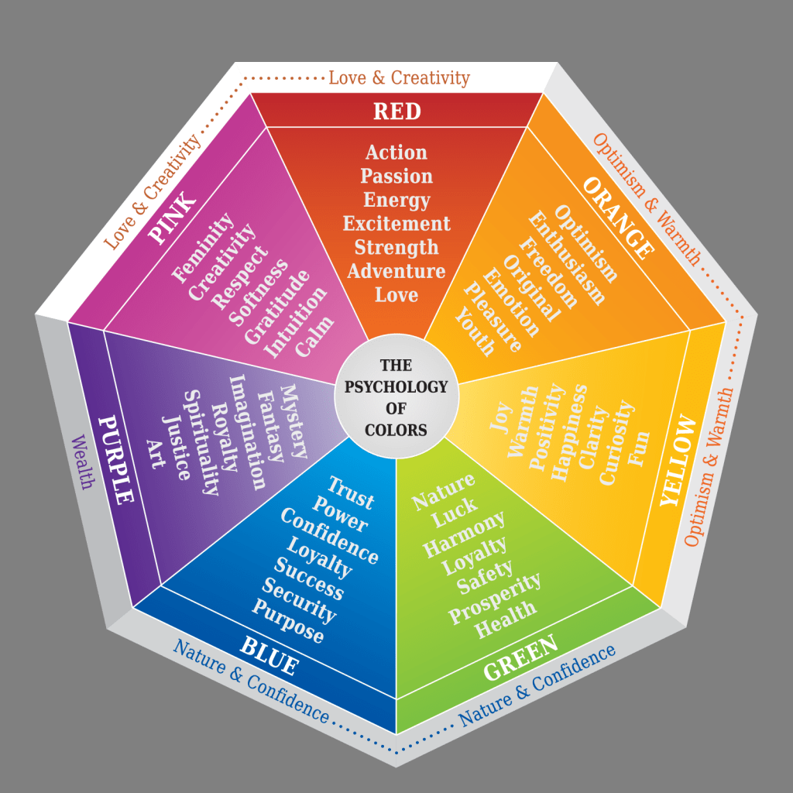
5. Type of lighting scheme selected: used to create the chromaticity of the scene.
6. Colour temperature of the proposed scene. In the same way, it should be taken into account:
Measurement of the colour temperature in kelvin , so that the higher the scene , the more bluish , and the lower the colour temperature , the more reddish .
Colour temperature balance of the light sources used. The lighting fixtures are colour-dominant. In order to delimit the various colour ranges, there is the colour temperature scale, which is based on the assumed heating of a black body to a certain temperature.
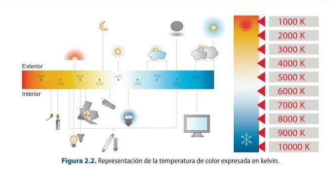
Colour temperature is very important when it comes to setting the desired lighting scheme within a given scene, because depending on what type of sources are selected, it will set the predominant colour temperature of the scene.
White Balance & Kelvin Color temp explained 💡
2.1 Colour temperature
Take a video camera and record an indoor scene; then modify the scene by varying
the light sources. Check the prevailing colour temperature.
As discussed in Unit 1, colour does not exist. It is not an intrinsic property of
objects and what makes them perceived with a certain colour are these three
factors:
1. The properties of the light incident on the object.
2. The chemical properties of the matter of which the bodies are composed.
3. The human visual system, which will determine the final chromatic
sensation perceived by our brain.
Without the presence of light it would be practically impossible to perceive
the chromatic sensation and our environment. Every illuminated body
absorbs all or part of the electromagnetic waves and reflects the remaining
ones. The reflected waves are analysed by the eye and interpreted as colours
according to the corresponding wavelengths.
2.2. Hardness and softness of the light beam
In order to put into practice the different aspects discussed about the lighting of a scene, the first thing to be decided is the type of illuminant to be used, in other words, the type of light source that will be dealt with later.
1. Diffuse light is light that strikes the object from a multitude of angles, providing a more homogeneous illumination and producing less sharp shadows. It can be achieved with artificial and natural light sources such as from a cloudy sky or light that is reflected from an uneven surface.
This type of light can be used if the following main results are to be achieved:
Lighting without creating added shadows. To achieve soft tonal progressions. To soften the modelling and texture of the scene.
The use of this type of light can have disadvantages, such as:
It is a difficult type of light to crop.
It is quite complicated to control. It can produce flat lighting, without any kind of relief. If used as a general light, it can reduce the sense of depth. The intensity of this type of light decreases with distance, so it is inversely proportional to distance.
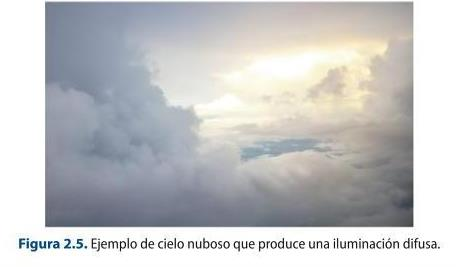
2. Hard light is the light produced by an illuminant when it is directed directly at an object, thus producing sharp, defined shadows. This type of light comes from any concentrated source that has a small surface area, i.e. compact.
This light can be used for the following main effects:
To create sharp and precise shapes. To produce accentuated shadows. To use a constant intensity at a certain distance.
But, as with diffuse light, hard light can also have disadvantages in its use, such as:
The highlighting of texture and modelling can be excessive. By producing highly contrasted images, the tones can become less vivid. It can produce a lot of shadows if several illuminants of this type are used.
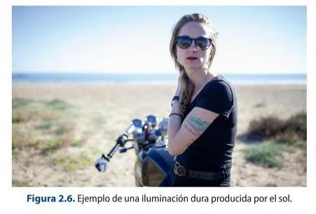
2.2.1. Types of sources used in lighting
When planning the lighting of a scene, four types of primary light sources should be used as a starting point:
1. Key light. This is usually a hard light source that normally establishes the direction and quality of the light, so that it determines the exposure and marks the shapes, surfaces and textures present in the scene, as well as the generation of shadows. This source can be placed in different positions depending on the desired result of the image, ranging from the most common, which is right at the height of the camera, to right behind the subject.
2. Fill light. This can be a soft or diffused light source and is used to reduce the overall contrast and illuminate shadowed areas. It is an additional light to fill in areas of shadows that have been produced by the main light. The position in which it is usually placed can range from close to the lens to opposite to the main light.
3. Separation or hair light. It is used to separate the subject from the background. It is not always necessary, but it accentuates the colour and texture of the hair of the subject being illuminated. Its placement varies depending on the effect you want to achieve, but allows for any point within the subject's area of illumination.
4. Back light. This is usually a hard light that is placed at the back. Because of its location, it is important to be aware of possible reflections on the camera lens. Depending on the importance you want to give to the background, this light is the first or the last to be placed.
Other types of sources are:
Back light (contraluz) , which is usually used behind the subject and makes it possible to differentiate the shadow of the subject and its outline.
Sidelight, which is placed to the side of the subject and is usually opposite to the main light.
Depending on the direction in which the source is placed, the light can be:
Front light: corresponds to the source placed in a direct-front position to the camera. The main effect achieved is to reduce texture and modelling to a minimum. It helps to cover up wrinkles or shadows that are not wanted. Sidelight: is the source that is placed on either side from above, below or from the side. The main effect is to enhance contour and texture. Back light: This is the source that is placed behind the subject in the direction of the camera axis unless it is offset, ineffective or the subject is translucent. If it is offset, it produces more edge modelling.
When an object is illuminated, depending on whether the light applied is
natural or artificial, a shadow is cast on the object in question. The shadow has
some qualities or characteristics that must be known:
Shadow density.
The sharpness (nitidez) of the shadow will be subject to the opacity of the
object and the hardness of the perimeter, and can be affected by:
- Shadow size.
- Shadow length.
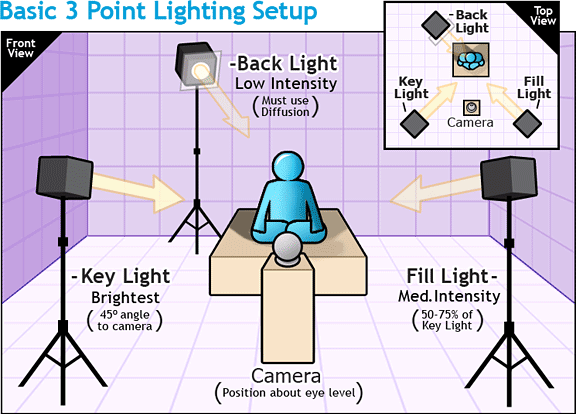
2.2 Lighting an object
In groups you will create a lighting scheme with the following requirements.
Observe also the effects of the light on the object to be illuminated.
a) Select an object and a hard light source to illuminate and place the light in front
of the object. Observe the result with respect to the shadows.
b) Repeat the same process modifying the source in different positions with
different angles.
c) What happens if instead of moving the light source you move the subject to be
illuminated?
2.3. Types of light sources and general considerations on light sources
Light sources can be of two main types. Firstly, there is natural light, which is the light provided by the sun. This light is difficult for the lighting technician to control, but its use is very common in outdoor filming, for example. This is because weather variations cannot be controlled, although they can be predicted, so it is quite unpredictable. Another aspect that makes it difficult to work with this type of source is the rapid change in colour temperature and light direction throughout the day, without taking into account that the length of the daylight hours also changes. All these particularities mean that natural light is impossible to manipulate 100 %, which is why the use of back-up lighting is highly desirable. Natural light can come directly from the sun, as already mentioned, from sky light or from light reflected by objects.
Secondly, there is artificial light. This is the light that comes from the different light sources that have been created by man and that allow greater control of the different parameters that intervene in the illumination of a scene. The use of this type of lamp makes it possible to select between the use of soft or hard light, to modify the directionality of the spotlight used and to control the shadows they produce, for example.
When selecting the right type of lighting equipment for a particular event, a number of considerations should be taken into account:
The quality of the light: in this parameter it is important to note whether the light supplied is hard, soft or diffused light. The efficiency of the source: this refers to the amount of light emitted in relation to the energy consumed. Dispersion to establish the coverage of the light source. Control with respect to the possibility of adjusting and controlling the light beam. The size and weight. The type of assembling (montaje) required for the source. Adaptability: i.e. the versatility of the source for other uses. Auxiliary devices. Reliability and robustness. The auxiliary utilities to be used. Types of light source.
When selecting the type of light source, there are a series of important photometric magnitudes for planning a scene:
1. Luminous intensity (I): this is the luminous radiance of a source in a given direction. It is measured in candelas (cd).
2. Luminous flux (F): corresponds to the fraction of visible radiant flux. It is measured in lumens.
3. Illumination (E): this is the luminous flux that falls on an element with a given surface area. It is measured in lux or candela-foot.
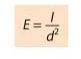
Where E is the illuminance, I is the luminous intensity and d is the distance from the source to the surface to be illuminated.
2.3 Calculation of illuminance
Calculate the illuminance on a surface 1 m away from the source. Perform the
same calculation if the distances are 2 m and 5 m from a light source having an
intensity of 4 cd.
4. Brightness or luminance: is the luminous intensity emitted, reflected or transmitted
by a unit area.
2.3.1. AV light sources and lamps
A lamp is a light emitter and consists of four basic parts:
1. Filament: it is made of metal. When heated, to prevent it from deforming, there are
a number of filament supports.
2. Ampoule: filled with an inert gas that protects the filament from contact with
oxygen to prevent it from burning.
3. Conductor wires: these are used to conduct electricity from the cap to the filament
and are protected by a glass support.
4. Lamp cap: this is the part that supports the lamp and through which the electricity
enters.
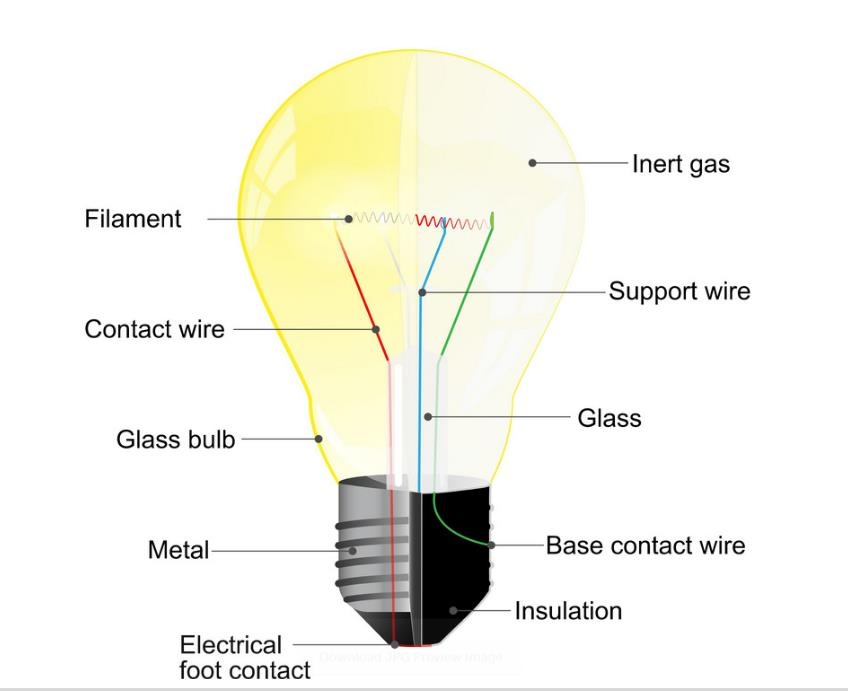
The following types of lamps are used in professional lighting:
Tungsten or incandescent lamps. Tungsten halogen or quartz lamps. Gas discharge lamps (metal halide, HMI, CSI). Fluorescent tubes. Coal arc lamps. LEDs.
2.4 Professional Lighting
Find an example for each type of professional lamp and write down its characteristics. What
are the advantages of LED lamps?
Tungsten lamps
These lamps use a tungsten filament in such a way that, over time, the protective
bulb blackens and the properties offered by this type of source diminish. Their
main characteristics are:
They have a long life.
They can be used on many types of media.
They are quite safe.
They require little care.
They use a lot of energy and have low luminous efficiency.
Their incandescent filament creates shadows.
They offer a colour temperature between 2500 and 3000 K, but it is not
constant throughout their lifetime.
Tungsten halogen or quartz lamps
Unlike the first type, tungsten halogen lamps do not have a blackened bulb, as they are
filled with a halogen gas, iodine or bromine, which prevents this problem by restoring
the filament. There are two basic types depending on whether they need a
transformer or not to work.
The main characteristics they offer are:
High luminous efficiency, i.e. high luminous intensity for the same
consumption.
Small size.
They offer a colour temperature of over 3200 K.
They heat up easily.
They have a longer life than incandescent lamps, about 2000 hours of life.
They are cleaner and therefore more environmentally friendly.
They are quite fragile and get very hot.
They offer different types of models depending on the support in which they
are used.
Fluorescent lamps
These sources provide soft light and are often used in groups.
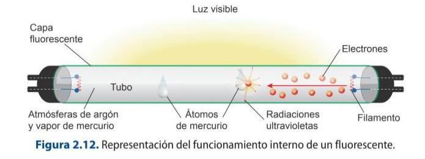
They have different characteristics:
They offer a high luminous intensity. They are fragile. They are quite economical and have a large volume. They are easy to handle.
They give three times more light than tungsten lamps of the same consumption. They have problems in the spectrum of light that they manage to reach, as they tend to cause a flicker which means that they do not offer a correct chromatic richness. They offer a colour temperature between 3000 K and 6000 K. Compact fluorescent lamps (CFLs) have the same characteristics as conventional fluorescent lamps, although they are smaller in size.
LED lamps (light-emitting diode)
For some years now, LED technology has been displacing the use of other lamps at a professional and domestic level, as they are very reliable, versatile and energy-saving lighting systems.
This type of source is made up of a semiconductor material, which, when electric current passes through it, provides light. The type of light colour emitted depends on the semiconductor material used. These materials work thanks to the photoelectric principle, whereby some materials, when subjected to the passage of current, generate light. They are composed of LEDs, which are diodes and have a specific function. Anvil, anvil LED chip Reflecting cavity Flat edge Cathode Anode Anode
LED diodes allow current to flow through them and cause electrons to combine with the wavelengths present in the device and release energy in the form of photons. The electrons pass through the diodes and are transformed into light. This process is known as electroluminescence. So, for the diode to produce light, it must be polarised, i.e. the electric current must pass from the positive terminal or anode to the negative terminal or cathode for the LED to react and produce photons, which takes place when the electrons combine.
These sources have a number of characteristics:
They are very efficient, as they consume less electricity and are capable of giving a high light output. They are expensive, but work is being done to improve materials and techniques to reduce the high manufacturing costs. They have a long life. There are many types of bulb applications such as LED candles, LEDspot, LEDspot Par, LED tubes, LED bulbs, LED capsules, etc.
Some types of sources using LED technology are Fresnel drivers, which are characterised by providing a soft and homogeneous illumination allowing control of the colour and intensity of the light. They offer solutions for many types of use because they are manufactured in many different wattages. Another type is the Sky
Panel: a soft light that is small in size and allows the colour temperature to be regulated between 28000K and 10000K.
Interesting Websites
https://avisualstudios.es/
https://www.arri.com/en
https://www.youtube.com/watch?v=JaYVWu3Oa9s
2.3.2. Entertainment and audio-visual lighting equipment
There are four types of broadcast projectors, which are:
1. Soft light projectors. Their main function is to provide fill light and to illuminate backgrounds well. These can be:
Scoops or ellipsoidal concave ambient and adjustable concave projectors that allow the use of diffusers. Minibars or groups of ambient lights that can be individually switched off and their intensity regulated. Ambient spotlights for quartz lamps. Soft light projectors with internal reflection giving high intensity diffused light. Fluorescent lamp sets for fill and soft light. Large ambient projector for use with quartz or fluorescent lamps. It is important to note that it allows the use of diffusers.
2. Fresnel or concentrated light projectors. These are devices that allow the beam to be focused by means of a system consisting of a lens and a parabolic mirror. They have two light beam positions: spot or point mode and flood or open mode.
3. Effect projectors. They allow for the projection of light shapes in specific areas with soft or cut-out edges.
4. Tracking projectors. They are used for continuous tracking of the action performed by actors, presenters, etc. The intensity of the beam is regulated by a shutter and the area covered can produce soft edges.
Other lighting fixtures (accesorios) used to control lighting are:
Diffusers: used to transmit light in varying degrees by reducing the luminous intensity.
Visors (viseras): these allow the width and height of the light beam to be adjusted. They are black metal pieces that are placed at the front of the floodlight. Ball-joint brackets (crémer con rotula): these are used to diffuse part of the light beam, to produce shadows or to avoid reflections. They consist of several brackets that are attached to the projector with a screw and a metal plate on the other side. Flags: these are small, rectangular, lightweight black pieces that are attached to a tripod by means of a ball joint. They are used to cut the light, prevent light leakage or avoid reflections. Reflector screen: used to reflect light by diffusing it. They are raised or white sheets.
The LED revolution: RGBACL, tunable white and point-source fixtures
The tungsten, HMI and fluorescent fixtures in the book have largely been replaced by LED. Multi-emitter engines (RGBW / RGBA / RGBACL) produce a full colour gamut and tunable white from a single unit, with high CRI/TLCI for accurate skin tones on camera. Soft panels (ARRI SkyPanel, Aputure Nova) and hard ‘point-source’ LEDs (ARRI Orbiter, Aputure LS 600) now cover most needs.
Pixel fixtures — LED tubes and dots that are individually addressable (Astera Titan Tubes, Quasar Science) — enable effects and ‘pixel-mapping’ that were impossible with the sources described here.
Sources: Color rendering index (Wikipedia) · Stage lighting instrument (Wikipedia)
Complementary: The Light Sources
Slide deck by Mercedes González — integrated here as complementary material to the book's lighting chapter.
2.4. Applied electricity for lighting installations in shows and the audiovisual media
Before looking at how electricity is applied in professional lighting installations in the audiovisual area, it is necessary to know a series of aspects that will allow us to have a more precise idea of how it works. Matter is made up of a group of molecules, which are in turn groups of atoms.
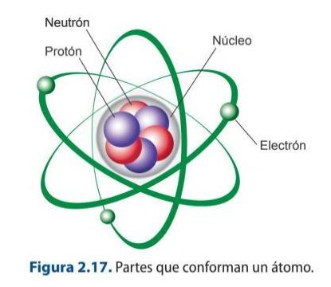
Atoms, depending on the number of their constituents, can be:
Positively charged: the number of protons is greater than the number of electrons. Negatively charged: the number of electrons is greater than the number of protons. Neutral: the number of electrons and protons is the same.
A positively charged atom, i.e. one that lacks electrons, tends to attract electrons from other atoms that are negatively charged. This attraction between them causes the electrons to move. This process is called electricity.
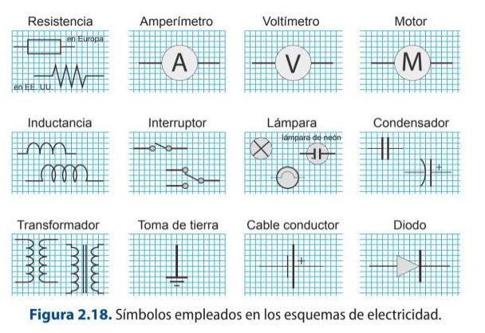
In order to conduct electricity, electrical circuits are used which are composed of the following basic elements:
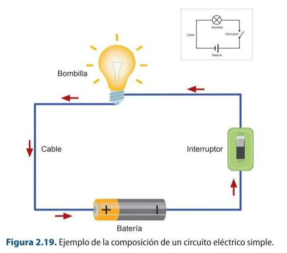
Generator: serves to generate the driving force, i.e. it supplies the circuit with the current or energy source. There are two types of current: direct current and alternating current.
Receiver: this is an element that allows electrical energy to be transformed into light energy, such as a light bulb. Switch: a switch whose purpose is to allow current to flow or not. Electrical conductor: this is the element that allows current to flow from one point in the system to another. Electrical cables are usually made of materials that are good conductors of electricity, such as copper, aluminium or gold. The conductor may consist of a single conductor, which is called a wire, or it may consist of several conductors, which is called a cable.
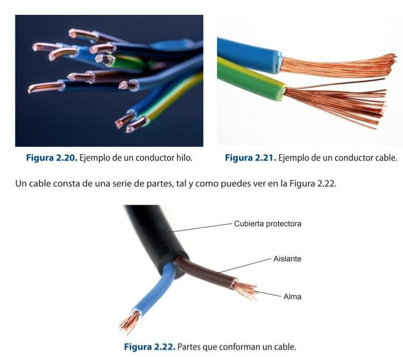
Cables are manufactured with different coloured conductors to identify the function they are to perform. The main functions are:
Phase conductor (fase) : brown, black or grey is usually used and its main function is to conduct the electric current. Neutral conductor (neutro): it is common to use the light blue colour and serves to return the electric current. Earthing conductor (tierra) : usually used in green and yellow and serves to protect the installation and people, as well as to minimise electromagnetic noise and therefore to improve the signal quality.
In an electrical circuit there are a series of magnitudes of which it is important to know their behaviour in order to be able to know how they work. The main quantities are:
Potential difference or voltage (ddp): this is the electrical voltage between two points in a circuit. A voltmeter is used to measure it and it is measured in volts (V). Current intensity (I): is the amount of electricity produced in a given time. It is measured in amperes (A).
It is therefore expressed as:
where Q is the quantity of electricity and t is the time.
Resistance (R): is the resistivity ( Ϸ ) of a specific material, i.e. the opposition of a material to the passage of electric current. It is measured in ohms (Ω). It is therefore expressed as:
Ohm's law states that the current flowing through an electrical circuit is directly proportional to the applied voltage and inversely proportional to the resistance present, i.e:
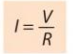
In relation to this law, it is important to know the concept of electrical power (P), as it is the amount of work developed in a given time, i.e. voltage (V) intensity (I), and is measured in watts (W):
If Ohm's law is applied, the following relationship can be calculated:
The work developed during a given time in a circuit is known as electrical energy (E) and is measured in joules (J).
2.5 Ohm's law exercises
a) Calculate the intensity present in a circuit of an electrical device of 70 V and 90 Ω.
b) What voltage (tensión) can be applied to a 250 Ω and 80 A resistor?
The different resistors can be linked together to form electrical circuits, which can be
of three main types.
The three main circuits are:
1. In series: the components are placed in series, so it must be remembered that the
current that circulates is the same for all the elements that make up the circuit and
they cannot be switched on and off individually.
2. In parallel: the components are placed in branches, so that they can be switched on
and off independently. The current given by the source is divided by the number of
branches and they are supplied by the same voltage and the voltage drop across the
resistance of each branch is the same.
3. Seriparallel or mixed: it is a circuit that has a mixture of the two previous ones, so it
has the properties of both.
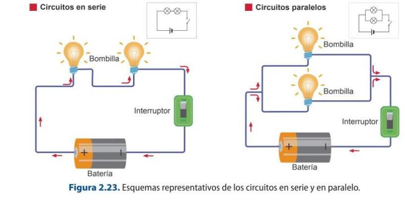
2.4.2. Types of electrical supplies
There are two types of electrical installations: single-phase (monofásica) and three- phase (trifásica) .
Three-phase current has three conductors (phase, neutral and earth) and three alternating currents. This is the one we will require from the theatres or event organisers for the correct connection of our dimmers and equipment, neutral and 3 phases with 380 V between phases. Fortunately this electrical distribution is the most common.
Single-phase current provides a voltage of 220 V and is that which has a single phase and alternating current, this is the one usually used in homes in Spain.
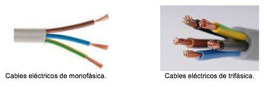
When planning a show, two needs will be taken into account and, from there, the type of current to be used will be established:
The general wiring from which the distribution to the different points will be made, which will normally be three-phase current. In audiovisual events there are usually two different three-phase connections, one for the sound equipment and another for the lighting equipment, to avoid interference between them. The connection to the different equipment, which will normally be single-phase current.
Once the needs have been established, it is necessary to establish how the connection is to be carried out or, in other words, the type of needs that derive from the route from the main switchboard that supplies the current to the distributor that allows the different devices to be connected to the mains. Hoses (mangueras) and different types of connectors are used for this purpose.
Three-phase or single-phase outlets can be supplied from the main switchboard, depending on the different needs of the equipment. The most commonly used connector for power distribution is the CETAC, which will be blue with three connectors if it carries single-phase current, or red with five connectors if it carries three-phase current. Another type of connector is the PowerCon, which supports up to 20 amps (A).
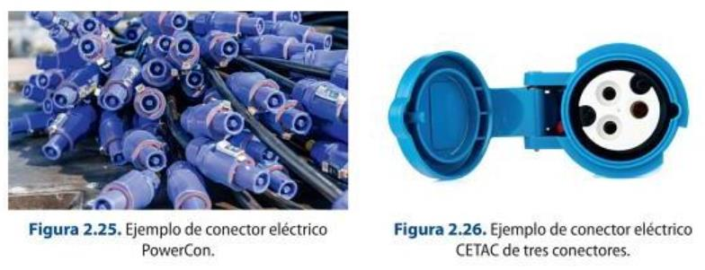
Resistive dimmers and pure tungsten rigs
Resistance and autotransformer dimmers, and all-tungsten rigs, are now historical. Dimming is electronic (thyristor/IGBT) or, increasingly, performed inside the LED fixture over data — the classic tungsten dimmer curve is simply emulated in software.
2.5. Lighting consoles
Lighting consoles allow the luminous intensity of all the lamps present in a given scene to be controlled. These consoles are capable of working the different sources individually or in groups, as well as allowing their intensity to be graduated, memorising actions such as the addition or removal of a spotlight or group of spotlights, as well as switching them on and off. There are a multitude of models depending on the type of use.
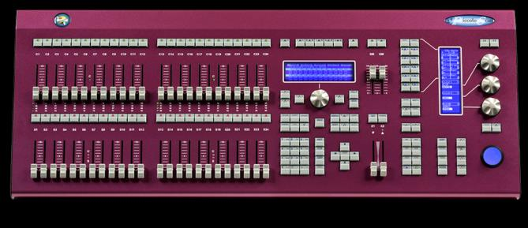
Lighting Desk Piccolo Scan 12
Lighting consoles consist of the following basic elements:
1. Dimmers: these are potentiometers that allow the intensity of a light source to be regulated; another associated function is the possibility of launching CUES. Depending on their intended use, they may be:
- Channel or dimmer.
- Submaster: groups a series of levels of the different channels or orders associated with them to be worked in a single dimmer. They are composed of an intensity fader and allow sequences or lists of effects to be made.
2. CUES: these are commands, such as effects, transition times, which are triggered by the dimmers.
3. Scenes: these correspond to the memorisation of the different lighting intensities.
4. Crossfades: these allow a transition to be made between two faders. It is important to note that these can be chained between the different sources selected.
5. Effects (fx): these are on pages that allow you to program and sequence as many fx as you want manually or by synchronising with a MIDI signal. An fx can be played from a submaster or from the GO/STOP button.
6. Settings menu: allows you to modify and edit the channel assignment and all related settings.
7. Channel Flash: Allows you to bring a given channel to full intensity.
8. Exam key: or to supervise any content on the table.
9. Multifunction keys: can be assigned to any function required by the operator.
10. 512-point DMX channel patch: for accessing the DMX protocol.
11. User setup: or the different personal configurations that you want to incorporate.
12. Monitoring: which can be either internal or external, depending on the model; it allows the visualisation of the playbacks and the commands.
13. Scene recording: these are set meters that save the scene configurations that are going to be used.
14. MIDI integration: allows different electronic musical instruments to be integrated and communicated synchronously.
2.5.1. DMX 512 Protocol
The Digital Multiplex protocol is used to control lighting effects via a DMX controller. This universal protocol is used in most brands of lighting desks and spotlights, thus standardising the controls between different fixtures from different manufacturers. It consists of 512 channels and forms what is known as a DMX circuit, which allows the various devices and controllers to communicate. Each channel has a value between 0 and 255, and as many universes can be created as channels are needed to include effects.
The data information is transmitted through three channels: two voltage channels and a ground channel at a speed of 250 kbit/s and asynchronously, by means of a cabling, braided with a shielding and coating or coaxial cable to avoid interferences and which
supports an impedance between 110 and 120 ohms. The connectors used normally are 5-pin XLR connectors.
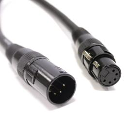
5-pin XLR connectors
Networked control: Art-Net, sACN, RDM and wireless DMX
DMX512 is still the base protocol, but modern rigs carry hundreds of universes over standard Ethernet using Art-Net and sACN (ANSI E1.31). RDM adds bidirectional feedback — remote addressing and fixture status over the DMX line — and wireless DMX (LumenRadio CRMX) removes cabling for moving or temporary fixtures.
Sources: Art-Net (Wikipedia) · RDM (lighting) (Wikipedia)